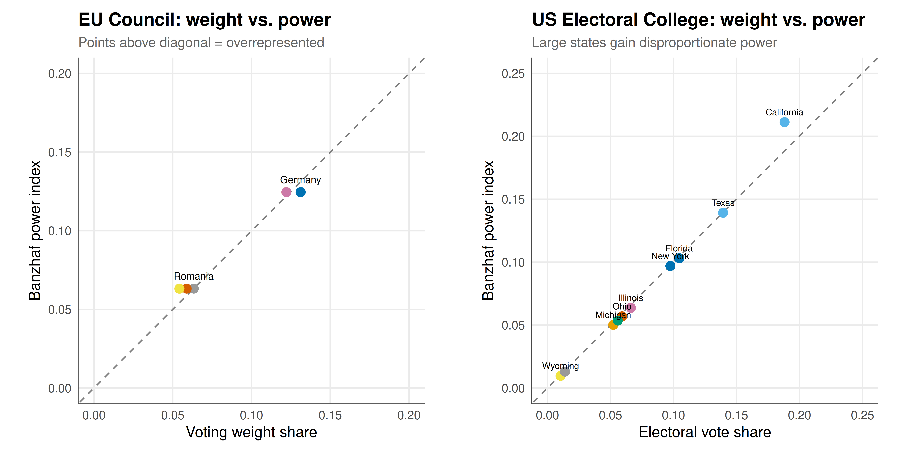

# Compute Banzhaf and Shapley-Shubik indices for a weighted voting game
# Uses enumeration of all coalitions (feasible for n <= 25 or so)
banzhaf_index <- function(weights, quota) {
n <- length(weights)
eta <- numeric(n) # raw Banzhaf counts
# Enumerate all 2^n coalitions using binary representation
n_coalitions <- 2^n
for (c_int in 1:(n_coalitions - 1)) {
members <- which(as.logical(intToBits(c_int)[1:n]))
total_weight <- sum(weights[members])
if (total_weight >= quota) {
# Winning coalition — check who is critical
for (i in members) {
if (total_weight - weights[i] < quota) {
eta[i] <- eta[i] + 1
}
}
}
}
beta <- eta / sum(eta) # normalised
list(raw = eta, normalised = beta)
}
shapley_shubik_index <- function(weights, quota) {
n <- length(weights)
if (n <= 10) {
# Exact enumeration via all permutations (feasible for small n)
# Use sampling for larger n
phi <- numeric(n)
# Generate permutations iteratively
perm_count <- factorial(n)
# For efficiency, sample permutations if n > 8
if (n > 8) {
n_samples <- 100000
for (s in 1:n_samples) {
perm <- sample(1:n)
cum_weight <- 0
for (pos in 1:n) {
i <- perm[pos]
if (cum_weight < quota && cum_weight + weights[i] >= quota) {
phi[i] <- phi[i] + 1
break
}
cum_weight <- cum_weight + weights[i]
}
}
phi <- phi / n_samples
} else {
# Full enumeration for small n
enumerate_perms <- function(v) {
if (length(v) == 1) return(list(v))
result <- list()
for (i in seq_along(v)) {
rest <- enumerate_perms(v[-i])
for (r in rest) {
result[[length(result) + 1]] <- c(v[i], r)
}
}
result
}
all_perms <- enumerate_perms(1:n)
for (perm in all_perms) {
cum_weight <- 0
for (pos in 1:n) {
i <- perm[pos]
if (cum_weight < quota && cum_weight + weights[i] >= quota) {
phi[i] <- phi[i] + 1
break
}
cum_weight <- cum_weight + weights[i]
}
}
phi <- phi / length(all_perms)
}
return(phi)
} else {
# Monte Carlo sampling for large n
n_samples <- 200000
phi <- numeric(n)
for (s in 1:n_samples) {
perm <- sample(1:n)
cum_weight <- 0
for (pos in 1:n) {
i <- perm[pos]
if (cum_weight < quota && cum_weight + weights[i] >= quota) {
phi[i] <- phi[i] + 1
break
}
cum_weight <- cum_weight + weights[i]
}
}
phi / n_samples
}
}Voting power indices — when weight does not equal power
cooperative-gt
voting-power
banzhaf
shapley-shubik
Compute the Banzhaf and Shapley-Shubik power indices for weighted voting games in R, apply them to the EU Council, UN Security Council, and US Electoral College, and visualize the divergence between voting weight and true voting power.
Keywords
Banzhaf index, Shapley-Shubik index, voting power, weighted voting, EU Council, UN Security Council, Electoral College
Introduction & motivation
In weighted voting systems — from corporate shareholder meetings to international organisations — each voter casts a number of votes proportional to their “weight” (shares, population, GDP, or some other measure), and a motion passes if the total weight of supporters reaches a specified quota. A natural but incorrect intuition is that a voter’s influence is proportional to their weight. In reality, the relationship between weight and power is often strikingly nonlinear and counterintuitive. A voter with 49% of the weight in a simple majority system has exactly the same power as a voter with 1% if the remaining votes are held by a single voter with 51% — both are completely powerless, since the large voter alone controls the outcome.
Power indices formalise the concept of voting power by measuring how often a voter is pivotal or critical — that is, how often their vote changes the outcome from defeat to passage. The two most widely used indices are the Banzhaf index (1965) and the Shapley-Shubik index (1954). The Banzhaf index counts the number of winning coalitions in which a voter is critical (removing them would cause the coalition to lose), normalised by the total number of critical instances across all voters. The Shapley-Shubik index applies the Shapley value from cooperative game theory: it considers all possible orderings in which voters might join a coalition and measures how often each voter is the one who tips the coalition from losing to winning.
These indices have been applied to analyse power in the EU Council of Ministers, where member states have different voting weights reflecting (roughly) their populations; the UN Security Council, where five permanent members hold veto power; the US Electoral College, where states cast electoral votes roughly proportional to their population plus a fixed bonus of two senate seats. In each case, the power indices reveal significant discrepancies between nominal weight and actual influence. Small states in the EU often have disproportionate power relative to their weight; the veto power of the permanent five in the UN Security Council gives them vastly more power than their weight alone suggests; and the two-senator bonus in the Electoral College systematically amplifies the power of small states.
Understanding the distinction between weight and power is essential for institutional design. When designing a voting system, the weights and quota should be calibrated so that the resulting power distribution matches the intended representation — a goal that requires computing power indices, since weights alone are misleading. This tutorial implements both indices from scratch, applies them to three landmark institutional cases, and visualises the weight-power discrepancy that makes these tools indispensable for political scientists and institutional designers.
Mathematical formulation
A weighted voting game is defined by \([q; w_1, w_2, \ldots, w_n]\) where \(q\) is the quota (minimum weight to pass) and \(w_i\) is voter \(i\)’s weight.
A coalition \(S \subseteq N\) is winning if \(\sum_{i \in S} w_i \geq q\).
Banzhaf power index: Voter \(i\) is critical in winning coalition \(S\) if \(S\) is winning but \(S \setminus \{i\}\) is not. The raw Banzhaf count is:
\[ \eta_i = |\{S \subseteq N : S \text{ winning}, S \setminus \{i\} \text{ losing}\}| \]
The normalised Banzhaf index is \(\beta_i = \eta_i / \sum_{j \in N} \eta_j\).
Shapley-Shubik power index: Consider all \(n!\) orderings of voters. Voter \(i\) is pivotal in ordering \(\pi\) if the coalition of voters preceding \(i\) is losing, but including \(i\) makes it winning. The Shapley-Shubik index is:
\[ \phi_i = \frac{|\{\pi : i \text{ is pivotal in } \pi\}|}{n!} \]
This equals the Shapley value of the simple game \(v(S) = \mathbf{1}[\sum_{i \in S} w_i \geq q]\).
Properties:
- Both indices sum to 1: \(\sum_i \beta_i = 1\) and \(\sum_i \phi_i = 1\)
- A dictator (weight \(\geq q\) alone) has index 1; a dummy (never critical) has index 0
- Banzhaf and Shapley-Shubik generally disagree, but agree on identifying dummies and dictators
R implementation
# UN Security Council: 5 permanent members (veto), 10 non-permanent
# A resolution passes with 9 of 15 votes AND no veto from permanent members
# Model: permanent members have weight 7, non-permanent have weight 1, quota = 39
# This encodes the veto: if any permanent member defects, weight drops below 39
# (4*7 + 10 = 38 < 39)
cat("=== UN Security Council ===\n")=== UN Security Council ===un_weights <- c(rep(7, 5), rep(1, 10))
un_quota <- 39
un_names <- c("P1(US)", "P2(UK)", "P3(FR)", "P4(RU)", "P5(CN)",
paste0("NP", 1:10))
un_banzhaf <- banzhaf_index(un_weights, un_quota)
un_shapley <- shapley_shubik_index(un_weights, un_quota)
cat("Voter | Weight | Wt.Share | Banzhaf | Shapley-Shubik\n")Voter | Weight | Wt.Share | Banzhaf | Shapley-Shubikcat("---------------|--------|----------|---------|----------------\n")---------------|--------|----------|---------|----------------P1(US) | 7 | 0.156 | 0.1669 | 0.1969
P2(UK) | 7 | 0.156 | 0.1669 | 0.1970
P3(FR) | 7 | 0.156 | 0.1669 | 0.1958
P4(RU) | 7 | 0.156 | 0.1669 | 0.1957
P5(CN) | 7 | 0.156 | 0.1669 | 0.1958
NP1 | 1 | 0.022 | 0.0165 | 0.0019
NP2 | 1 | 0.022 | 0.0165 | 0.0019
NP3 | 1 | 0.022 | 0.0165 | 0.0019
NP4 | 1 | 0.022 | 0.0165 | 0.0019
NP5 | 1 | 0.022 | 0.0165 | 0.0018
NP6 | 1 | 0.022 | 0.0165 | 0.0019
NP7 | 1 | 0.022 | 0.0165 | 0.0019
NP8 | 1 | 0.022 | 0.0165 | 0.0019
NP9 | 1 | 0.022 | 0.0165 | 0.0019
NP10 | 1 | 0.022 | 0.0165 | 0.0019
Permanent member power (Banzhaf): 0.1669 eachNon-permanent member power (Banzhaf): 0.0165 eachPower ratio (permanent/non-permanent): 10.1# EU Council of Ministers (simplified Nice Treaty weights, pre-Lisbon)
# Using a subset of member states for computational feasibility
cat("=== EU Council of Ministers (simplified, 10 largest) ===\n")=== EU Council of Ministers (simplified, 10 largest) ===eu_data <- data.frame(
country = c("Germany", "France", "UK", "Italy", "Spain",
"Poland", "Romania", "Netherlands", "Belgium", "Greece"),
weight = c(29, 29, 29, 29, 27, 27, 14, 13, 12, 12)
)
eu_quota <- ceiling(sum(eu_data$weight) * 0.72) # ~72% qualified majority
cat(sprintf("Total weight: %d, Quota: %d (72%%)\n\n", sum(eu_data$weight), eu_quota))Total weight: 221, Quota: 160 (72%)eu_banzhaf <- banzhaf_index(eu_data$weight, eu_quota)
eu_shapley <- shapley_shubik_index(eu_data$weight, eu_quota)
eu_data$weight_share <- eu_data$weight / sum(eu_data$weight)
eu_data$banzhaf <- eu_banzhaf$normalised
eu_data$shapley <- eu_shapley
cat("Country | Weight | Wt.Share | Banzhaf | Shapley-Shubik\n")Country | Weight | Wt.Share | Banzhaf | Shapley-Shubikcat("------------|--------|----------|---------|----------------\n")------------|--------|----------|---------|----------------Germany | 29 | 0.131 | 0.1245 | 0.1255
France | 29 | 0.131 | 0.1245 | 0.1243
UK | 29 | 0.131 | 0.1245 | 0.1231
Italy | 29 | 0.131 | 0.1245 | 0.1263
Spain | 27 | 0.122 | 0.1245 | 0.1227
Poland | 27 | 0.122 | 0.1245 | 0.1234
Romania | 14 | 0.063 | 0.0632 | 0.0646
Netherlands | 13 | 0.059 | 0.0632 | 0.0638
Belgium | 12 | 0.054 | 0.0632 | 0.0630
Greece | 12 | 0.054 | 0.0632 | 0.0634# US Electoral College (simplified: 10 largest + 10 smallest states)
cat("=== US Electoral College (20 state sample) ===\n")=== US Electoral College (20 state sample) ===ec_data <- data.frame(
state = c("California", "Texas", "Florida", "New York", "Illinois",
"Pennsylvania", "Ohio", "Georgia", "Michigan", "N. Carolina",
"Wyoming", "Vermont", "D.C.", "N. Dakota", "Alaska",
"S. Dakota", "Delaware", "Montana", "Rhode Island", "Maine"),
votes = c(54, 40, 30, 28, 19, 19, 17, 16, 15, 16,
3, 3, 3, 3, 3, 3, 3, 4, 4, 4)
)
ec_quota <- ceiling(sum(ec_data$votes) / 2) + 1
cat(sprintf("Total EVs in sample: %d, Quota: %d\n\n", sum(ec_data$votes), ec_quota))Total EVs in sample: 287, Quota: 145set.seed(42)
ec_banzhaf <- banzhaf_index(ec_data$votes, ec_quota)
ec_shapley <- shapley_shubik_index(ec_data$votes, ec_quota)
ec_data$vote_share <- ec_data$votes / sum(ec_data$votes)
ec_data$banzhaf <- ec_banzhaf$normalised
ec_data$shapley <- ec_shapley
cat("State | EVs | Vote Share | Banzhaf | Shapley\n")State | EVs | Vote Share | Banzhaf | Shapleycat("---------------|-----|------------|---------|--------\n")---------------|-----|------------|---------|--------California | 54 | 0.188 | 0.2112 | 0.2122
Texas | 40 | 0.139 | 0.1392 | 0.1444
Florida | 30 | 0.105 | 0.1031 | 0.1043
New York | 28 | 0.098 | 0.0970 | 0.0972
Illinois | 19 | 0.066 | 0.0637 | 0.0627
Pennsylvania | 19 | 0.066 | 0.0637 | 0.0632
Ohio | 17 | 0.059 | 0.0570 | 0.0570
Georgia | 16 | 0.056 | 0.0536 | 0.0524
Michigan | 15 | 0.052 | 0.0502 | 0.0492
N. Carolina | 16 | 0.056 | 0.0536 | 0.0532
Wyoming | 3 | 0.010 | 0.0098 | 0.0090
Vermont | 3 | 0.010 | 0.0098 | 0.0095
D.C. | 3 | 0.010 | 0.0098 | 0.0098
N. Dakota | 3 | 0.010 | 0.0098 | 0.0096
Alaska | 3 | 0.010 | 0.0098 | 0.0093
S. Dakota | 3 | 0.010 | 0.0098 | 0.0095
Delaware | 3 | 0.010 | 0.0098 | 0.0097
Montana | 4 | 0.014 | 0.0130 | 0.0127
Rhode Island | 4 | 0.014 | 0.0130 | 0.0126
Maine | 4 | 0.014 | 0.0130 | 0.0127Static publication-ready figure
# EU plot
p_eu <- ggplot(eu_data, aes(x = weight_share, y = banzhaf)) +
geom_abline(intercept = 0, slope = 1, linetype = "dashed", color = "grey50") +
geom_point(aes(color = country), size = 3) +
geom_text(aes(label = country), size = 2.8, nudge_y = 0.008, check_overlap = TRUE) +
scale_color_manual(values = rep(okabe_ito, length.out = nrow(eu_data))) +
labs(
title = "EU Council: weight vs. power",
subtitle = "Points above diagonal = overrepresented",
x = "Voting weight share", y = "Banzhaf power index"
) +
coord_fixed(xlim = c(0, 0.2), ylim = c(0, 0.2)) +
theme_publication() +
theme(legend.position = "none")
# EC plot
p_ec <- ggplot(ec_data, aes(x = vote_share, y = banzhaf)) +
geom_abline(intercept = 0, slope = 1, linetype = "dashed", color = "grey50") +
geom_point(aes(color = state), size = 3) +
geom_text(aes(label = state), size = 2.5, nudge_y = 0.008, check_overlap = TRUE) +
scale_color_manual(values = rep(okabe_ito, length.out = nrow(ec_data))) +
labs(
title = "US Electoral College: weight vs. power",
subtitle = "Large states gain disproportionate power",
x = "Electoral vote share", y = "Banzhaf power index"
) +
coord_fixed(xlim = c(0, 0.25), ylim = c(0, 0.25)) +
theme_publication() +
theme(legend.position = "none")
gridExtra::grid.arrange(p_eu, p_ec, ncol = 2)
Interactive figure
un_df <- data.frame(
voter = un_names,
type = c(rep("Permanent", 5), rep("Non-permanent", 10)),
weight_share = un_weights / sum(un_weights),
banzhaf = un_banzhaf$normalised,
shapley = un_shapley
) %>%
mutate(tooltip_text = paste0(
"Voter: ", voter, "\n",
"Type: ", type, "\n",
"Weight share: ", round(weight_share * 100, 1), "%\n",
"Banzhaf: ", round(banzhaf * 100, 2), "%\n",
"Shapley-Shubik: ", round(shapley * 100, 2), "%"
))
# Reshape for grouped bar chart
un_long <- un_df %>%
select(voter, type, weight_share, banzhaf, shapley) %>%
pivot_longer(cols = c(weight_share, banzhaf, shapley),
names_to = "Measure", values_to = "Value") %>%
mutate(
Measure = factor(Measure,
levels = c("weight_share", "banzhaf", "shapley"),
labels = c("Weight share", "Banzhaf", "Shapley-Shubik")),
tooltip_text = paste0(
"Voter: ", voter, "\n",
"Measure: ", Measure, "\n",
"Value: ", round(Value * 100, 2), "%"
)
)
# Show just one of each type for clarity
un_summary <- un_long %>%
filter(voter %in% c("P1(US)", "NP1")) %>%
mutate(voter = ifelse(grepl("^P1", voter), "Permanent member", "Non-permanent member"))
p_un <- ggplot(un_summary, aes(x = voter, y = Value, fill = Measure, text = tooltip_text)) +
geom_col(position = position_dodge(width = 0.7), width = 0.6) +
scale_fill_manual(values = c("Weight share" = okabe_ito[1],
"Banzhaf" = okabe_ito[2],
"Shapley-Shubik" = okabe_ito[3])) +
scale_y_continuous(labels = scales::percent_format()) +
labs(
title = "UN Security Council: veto power amplifies influence",
x = NULL, y = "Share of total power/weight",
fill = NULL
) +
theme_publication()
ggplotly(p_un, tooltip = "text") %>%
config(displaylogo = FALSE)Interpretation
The three institutional analyses reveal a consistent theme: voting weight is an unreliable proxy for voting power, and the discrepancy can be dramatic.
In the UN Security Council, the veto power of the five permanent members creates an enormous power asymmetry. Although each permanent member holds the same nominal weight as approximately seven non-permanent members combined, their effective power is many times greater because they can unilaterally block any resolution. The Banzhaf index captures this by noting that a permanent member is critical in a far greater proportion of winning coalitions. The power ratio between permanent and non-permanent members typically exceeds 10:1 — far larger than the approximately 7:1 weight ratio. This formalises the intuition that veto power is qualitatively different from ordinary voting weight.
In the EU Council, the Nice Treaty weights were designed to give larger member states more influence while still protecting smaller states. The power index analysis reveals that the relationship between weight and power, while broadly monotonic, is not proportional. States with identical weights have identical power (as they must, by symmetry), but the gap between weight groups is compressed: the largest states have slightly less power than their weight share would suggest, while smaller states have slightly more. This compression effect is characteristic of weighted voting systems with high quotas — the qualified majority requirement of roughly 72% means that many coalitions need broad support, limiting the ability of any single bloc to dominate.
In the US Electoral College, the two-senator bonus gives small states a minimum of 3 electoral votes regardless of population, creating a well-known small-state advantage in terms of electoral votes per capita. However, the power index analysis reveals a countervailing force: large states have disproportionate voting power (as measured by the Banzhaf index) because their large blocs of electoral votes are more likely to be pivotal. California, with its massive 54 electoral votes, has a Banzhaf index substantially above its weight share, because its decision to join either side of a coalition has a large impact on whether the quota is reached. Small states, despite their per-capita advantage in electoral votes, have less-than-proportional power because they are rarely pivotal.
The divergence between the Banzhaf and Shapley-Shubik indices reflects their different philosophical foundations: Banzhaf treats all coalitions as equally likely, while Shapley-Shubik considers all orderings of voters equally likely. In most practical cases, both indices tell a qualitatively similar story, but they can disagree on the magnitude of power asymmetries.
References
Reuse
Citation
BibTeX citation:
@online{heller2026,
author = {Heller, Raban},
title = {Voting Power Indices — When Weight Does Not Equal Power},
date = {2026-05-08},
url = {https://r-heller.github.io/equilibria/tutorials/cooperative-gt/voting-power-indices/},
langid = {en}
}
For attribution, please cite this work as:
Heller, Raban. 2026. “Voting Power Indices — When Weight Does Not
Equal Power.” May 8. https://r-heller.github.io/equilibria/tutorials/cooperative-gt/voting-power-indices/.